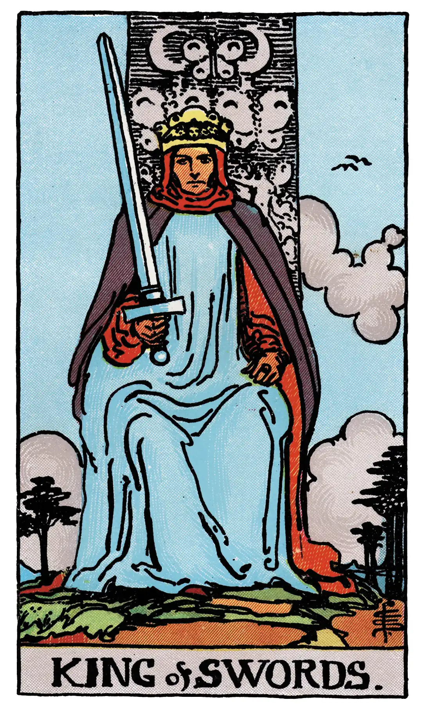

King of Swords

A.E.W.
Upright
Whatsoever arises out of the idea of judgment and all its connexions – power, command, authority, militant intelligence, law, offices of the crown, and so forth.
Additionally
A lawyer, senator, doctor.
Recurrence
2 - Minor counsel.
3 - Consultation.
4 - Great honour.
Reversed
Cruelty, perversity, barbarity, perfidy, evil intention.
Additionally
A bad man; also a caution to put an end to a ruinous lawsuit.
Recurrence
2 - Projects.
3 - Commerce.
4 - Celerity.
S.L.M.M.
Upright
A Lawyer, a Man of Law, Power, Command, Superiority, Authority
Reversed
A Wicked Man, Chagrin, Worry, Grief, Fear, Disturbance.
Description
He sits in judgment, holding the unsheathed sign of his suit. He recalls, of course, the conventional Symbol of justice in the Trumps Major, and he may represent this virtue, but he is rather the power of life and death, in virtue of his office.